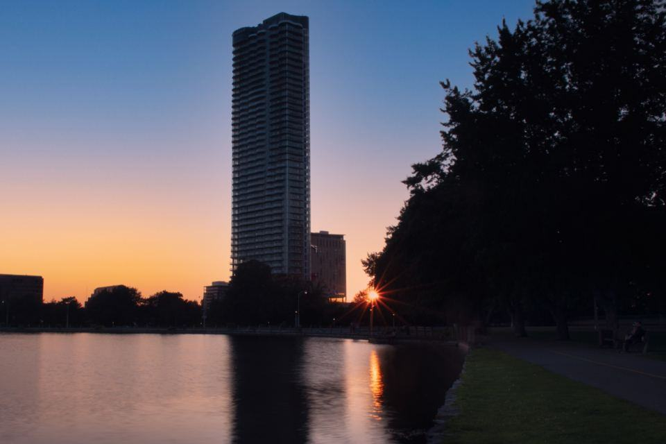
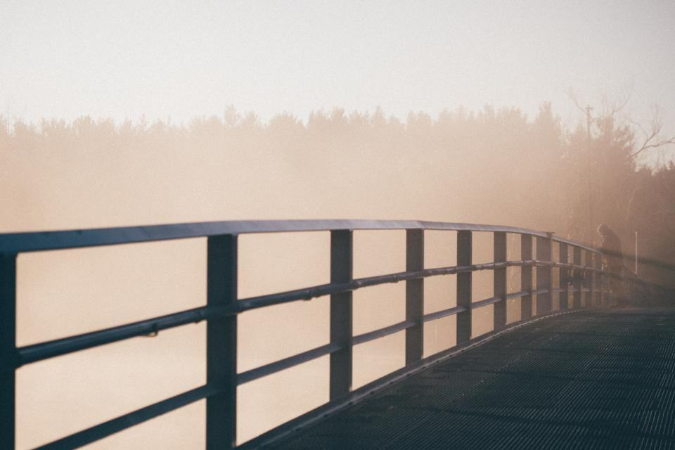
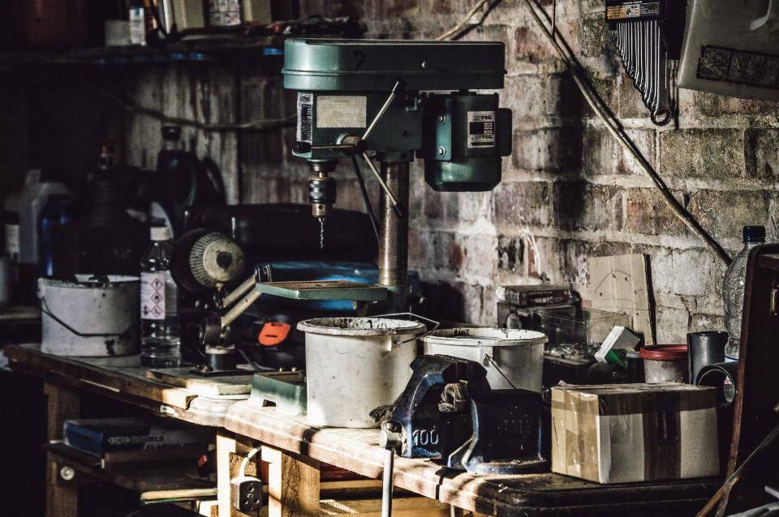
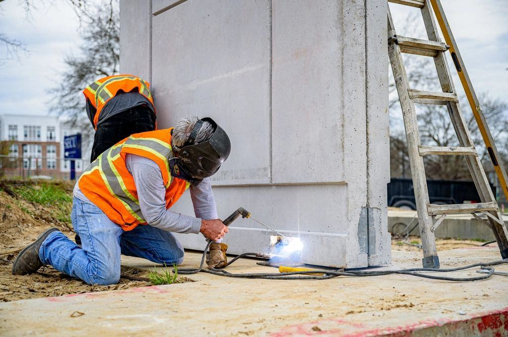
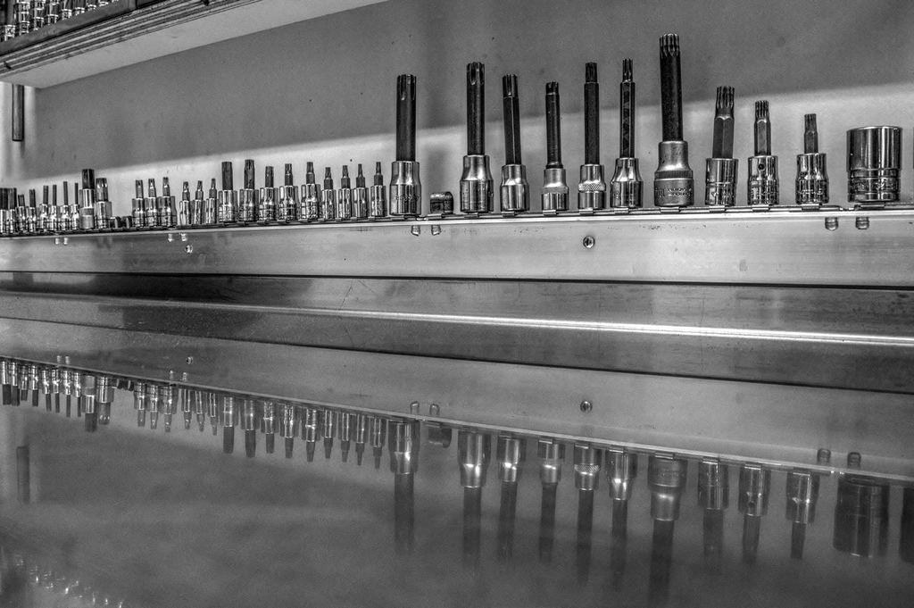

Tjänster
I dag är vi 16 anställda, varav två formgivare och elva smeder och svetsare, och vi omsätter 23 miljoner kronor. Hälften av uppdragen kommer via kommuner och landskapsarkitekter, resten från konstnärer som behöver en verkstad som kan förverkliga gestaltningsuppdrag i offentlig miljö.
Vad ska stå i stadsrummet?

Möbler för stadsrum
Vi formger och tillverkar bänkar, sittmurar, papperskorgar och pollare som hör ihop i en serie. Kommunen kan beställa samma modell i tio år och få exakt samma kulör och mått.
Sitsar i värmebehandlad ask eller ek från Halland byts utan att stålramen behöver lyftas.

Räcken vid vatten och broar
Kajräcken och broräcken ska tåla saltvind, påkörning och klättrande barn. Vi dimensionerar efter TRVK Bro och väljer varmförzinkat eller rostfritt beroende på läge.
Längs Nissan har vi monterat drygt två kilometer räcke sedan 2011.

Gestaltning och offentlig konst
När en konstnär vinner en tävling om ett verk i stål blir vi ofta verkstaden som löser hur det ska bära, svetsas och förankras. Konstnären är med i verkstaden under hela tillverkningen.
Vi har tillverkat 23 offentliga konstverk i Halland, Skåne och Västra Götaland.

Lek och skolgårdar
Lekskulpturer, klätterväggar och staket till förskolor och parker formas så att de lockar till lek men klarar lekredskapsstandardens krav på fallytor och klämrisker.
Varje lekskulptur besiktas av en certifierad lekplatsbesiktare före invigning.
Från gestaltning till monterad bänk
- 1

Tidigt samtal
Vi kopplas in redan i gestaltningsskedet och ger råd om material, budget och underhåll.
- 2

Prototyp i full skala
En bänk, en räckessektion eller en del av konstverket byggs först och provas på plats.
- 3

Tillverkning i serie
Efter godkänd prototyp tillverkas resten i samma verkstad, med samma smeder.
- 4

Montage och skötselplan
Vi monterar med kranbil och lämnar skötselplan och reservdelslista till förvaltaren.
Godkänt för bro, lek och stad
- EN 1090-1, utförandeklass 2CE-märkning av bärande räcken, cykeltak och konstruktioner i stål.
- TRVK BroBroräcken dimensionerade och dokumenterade enligt Trafikverkets tekniska krav.
- SS-EN 1176Lekskulpturer utformade och besiktade enligt standarden för lekredskap.
- ISO 14001Certifierat miljöledningssystem med mål för material, transporter och avfall.